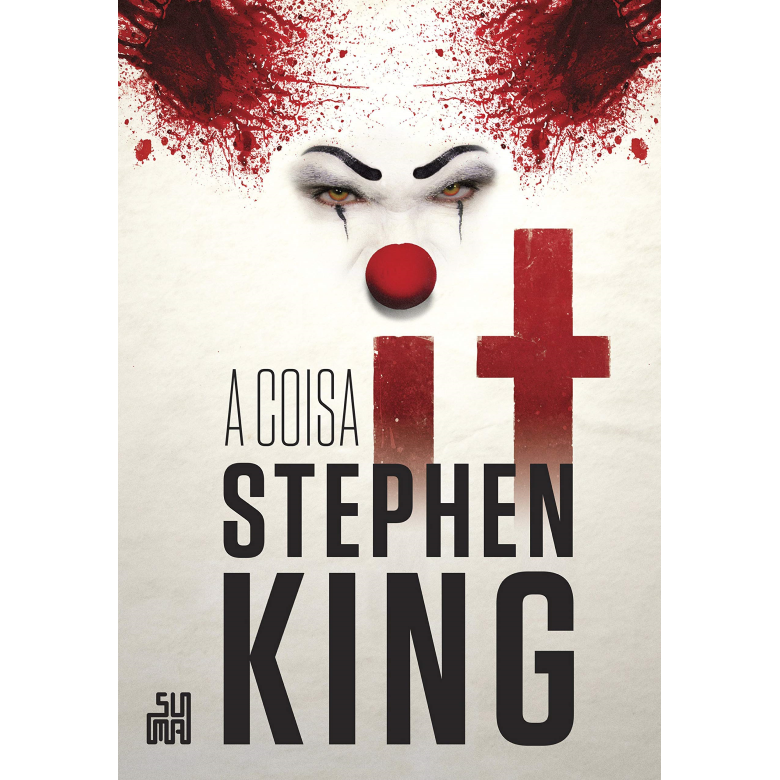

Livro - It: A Coisa
R$ 72,25
1x R$ 72,25 sem juros
Livro - It: A coisa
Nesse clássico que inspirou os filmes da Warner, um grupo de amigos conhecido como Clube dos Otários aprende o real sentido da amizade, do amor, da confiança... e do medo. O mais profundo e tenebroso medo.
Durante as férias de 1958, em uma pacata cidadezinha chamada Derry, um grupo de sete amigos começa a ver coisas estranhas. Um conta que viu um palhaço, outro que viu uma múmia. Finalmente, acabam descobrindo que estavam todos vendo a mesma coisa: um ser sobrenatural e maligno que pode assumir várias formas. É assim que Bill, Beverly, Eddie, Ben, Richie, Mike e Stan enfrentam a Coisa pela primeira vez.
Quase trinta anos depois, o grupo volta a se encontrar. Mike, o único que permaneceu em Derry, dá o sinal — uma nova onda de terror tomou a pequena cidade. É preciso unir forças novamente. Só eles têm a chave do enigma. Só eles sabem o que se esconde nas entranhas de Derry. Só eles podem vencer a Coisa.
“Mesmo depois de tantos anos, o público continua obcecado por IT. Ficamos obcecados porque todos temos medos. Todos temos algo que nos assusta, sejam palhaços e aranhas ou coisas que se escondem em um lugar muito mais profundo de nossa mente. Este livro fala com todo mundo. É o romance mais assustador de King, e duvido que isso vá mudar” — The Guardian